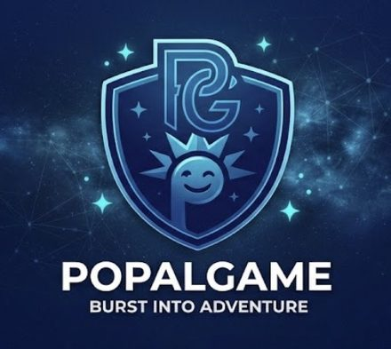

Ловіть істот, збирайте ресурси й будуйте табір, де помічники працюють на вас.
ГратиPopal — безкоштовна 3D-гра про пригоди й табір, яка працює просто на телефоні чи комп’ютері. Ви потрапляєте в яскравий край з островами, горами та стежками, ловите істот кулями, а вони стають вашими помічниками: добувають ресурси, захищають вас і допомагають розвивати табір.
П’ять островів, гори, вказівники між ними й міні-карта, щоб не заблукати.
Десять видів істот і чарівні кулі різних кольорів. Ослабте істоту та киньте кулю.
Помічники добувають ресурси й вступаються за вас, коли на вас нападають.
Час у світі змінюється, а мешканці краю дають завдання з нагородами.
Popal встановлюється як застосунок з власною іконкою й відкривається на весь екран. Обирайте свій пристрій.
Гра безкоштовна й без реєстрації. Прогрес зберігається на вашому пристрої. Гру можна просто відкрити в браузері кнопкою «Грати» і встановити пізніше з розділу «Налаштування» всередині гри.
У світі живуть десять видів істот. Спіймана істота переселяється у ваш табір і сама добуває ресурси.
Трав’яний. Добродушна панда з бамбуком, у таборі збирає деревину.
Земля й кристал. Броньований копач зі свердлами, видобуває камінь.
Вогняний павук. Нападає першим, тож бережіть здоровʼя.
Темрява й привид. Напівпрозорий хамелеон, ловиться легше за інших.
Хмаринка з золотими ріжками. Спокійний збирач урожаю.
Метелик-фея з чотирма крилами. Розсипає пилок.
Крижаний олень з кришталевими рогами. Добуває камінь.
Чорний вовк з неоновими блискавками. Нападає першим.
Сухопутна акула на лапках. Любить воду й деревину.
Високий птах із сонячним вінцем за головою.
Перша істота у вашому таборі за кілька хвилин.
Пʼятеро мешканців дають завдання. Стрілка на екрані показує, куди йти, а за кожен квест ви отримуєте досвід і кулі.
Гра працює в браузері телефона чи компʼютера. Прогрес зберігається на вашому пристрої.
Грати